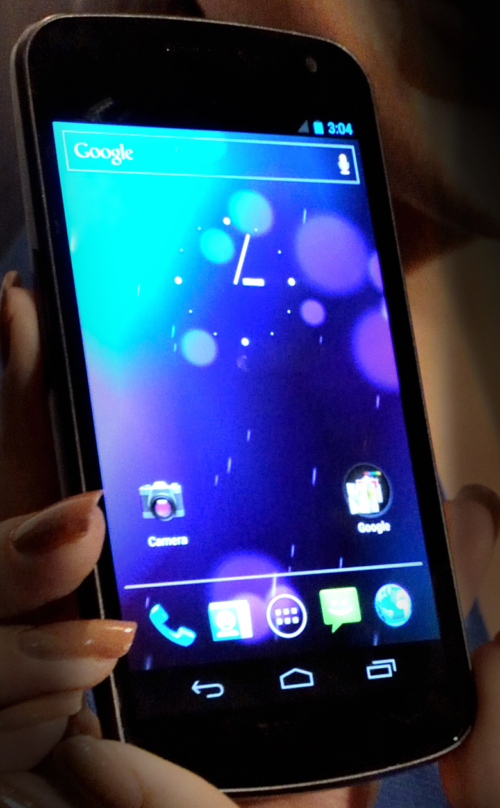

Mobile Computing
Mobile computing is an interaction between humans and computers in which a computer is expected to be transported during normal use, allowing data, voice , and video transmission.Mobile computing covers handheld computers, computer hardware and desktop apps.
___________________________INDEX______________________________
________________________________________________________________
- Portability: simplifies movement of device(s) in the mobile computing environment.
- Connectivity: Ability to stay connected with minimal amount of lag/downtime, without being affected by movements of the connected nodes
- Social Interactivity: Maintaining the connectivity to collaborate with other users, at least within the same environment.
- Individuality: make the technology suit to individual needs.
